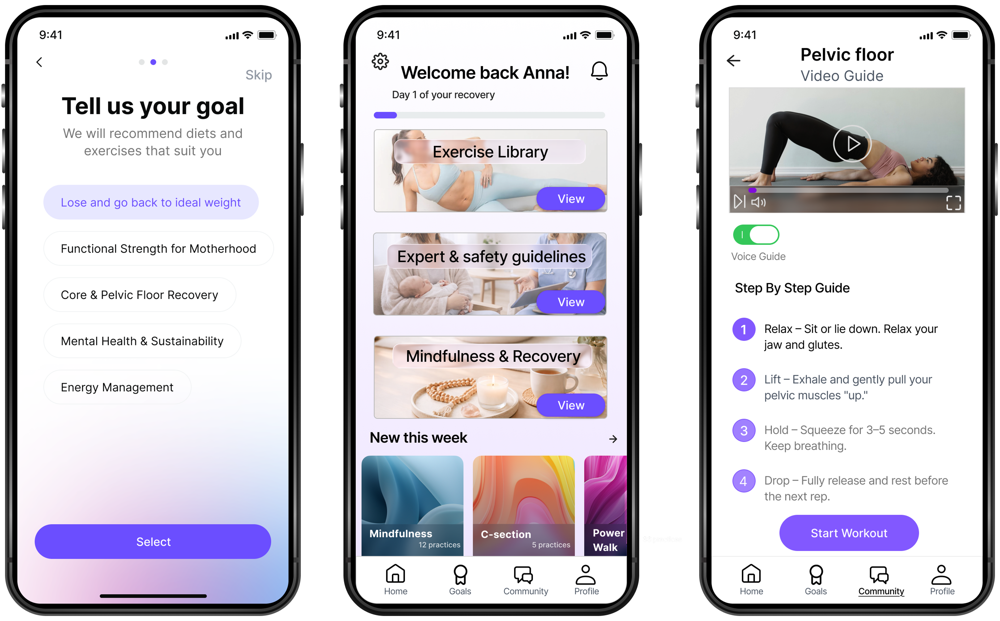
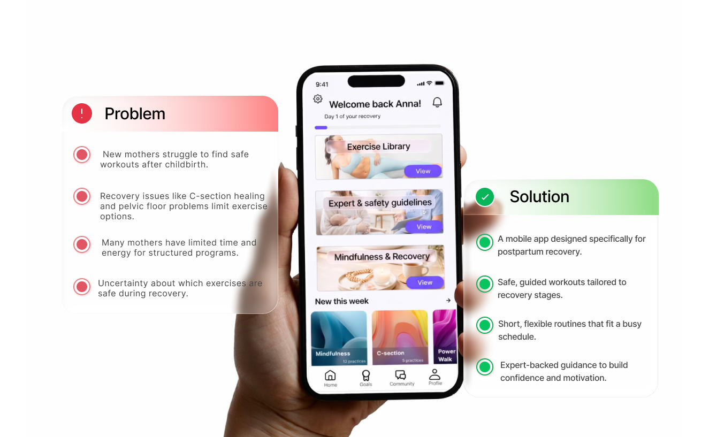
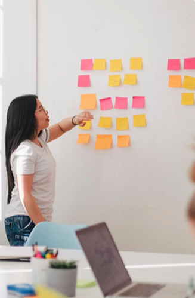
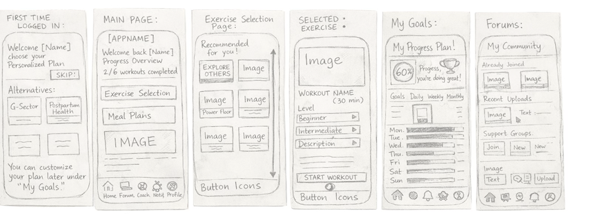
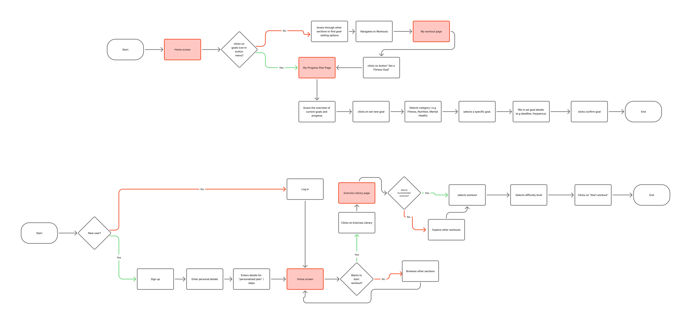
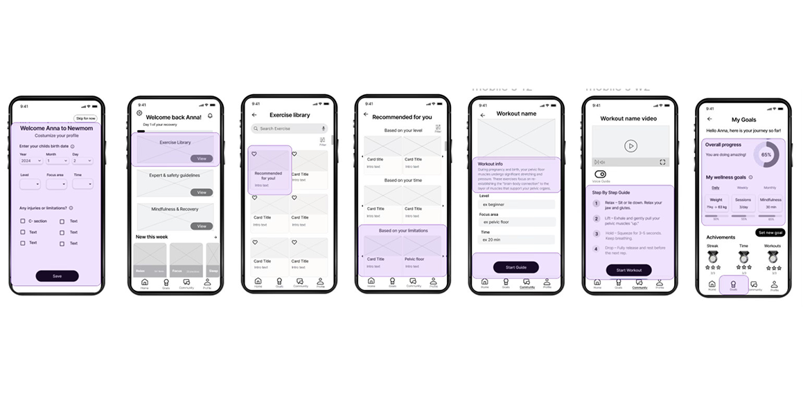
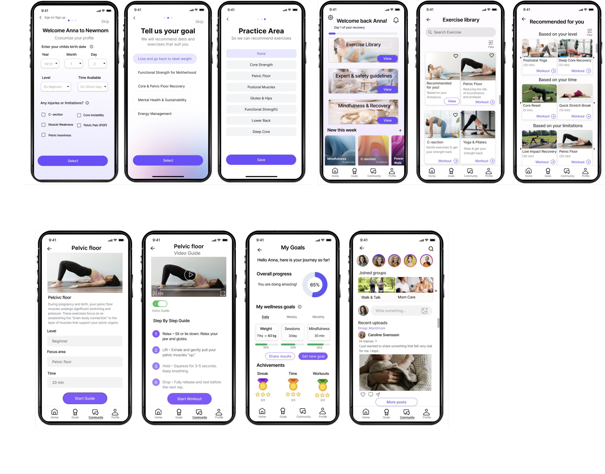

Case study · Mobile app design
New mom Supporting New Mothers in Returning to Exercise
This UX project explores how digital solutions can help new mothers safely return to physical activity after childbirth. The goal was to design a mobile app that provides flexible workouts, personalized recovery programs and motivational support.

My role
- UX Research
- Synthesis of insights
- User flows
- Wireframing
- Usability testing
Deliverables
- Research plan
- Problem definition
- Low-fidelity wireframes
- Usability testing
- Mid-high fidelity wireframes
Goal
The goal of this project was to design a mobile app that helps new mothers safely return to physical activity after childbirth. The app needed to provide accessible workouts that fit into a busy schedule while also addressing postpartum recovery needs.
Design thinking
Research
Analysis
Ideation
User Flows
Wireframes
High fidelity
Research
The project started with a research phase to understand the needs and challenges of women returning to exercise after childbirth. The research focused on mothers 6–12 months postpartum.
Research methods
Download full Research case study
Interviews
Interviews with new mothers
Literature Review
Postpartum recovery and exercise safety
Competitive Analysis
Analysis of existing postnatal fitness apps
Research, analysis & insights

Collecting & Analysing data
Research data was organised using affinity mapping to identify patterns, themes, and user pain points.
- Spreadsheets
- Affinity mapping
- Pain point mapping

Empathy map
An empathy map was created to better understand users’ thoughts, feelings, and challenges during postpartum recovery.

Key Findings from Research
Research identified several barriers preventing new mothers from returning to exercise after childbirth.
Limited Time
New mothers have little time and energy for exercise.
Uncertainty
Many mothers are unsure which exercises are safe.
Recovery Varies
Recovery depends on delivery type and physical condition.
Low Motivation
Motivation drops without support or progress tracking.

Key Insights
These findings revealed several opportunities for the design.
Safety Builds Confidence
Users need guidance on safe postpartum exercises.
Flexibility is Key
Workouts must be short and adaptable.
Personalisation Matters
Training must adapt to individual recovery.
Support Drives Motivation
Community and progress tracking increase engagement.
Persona
Based on the research findings, a primary persona was created to represent the needs and challenges of the target users. The persona helped guide design decisions throughout the project and ensured the solution focused on real user needs.
Anna, 34 – New Mother
Anna is a first-time mother who wants to regain her strength and well-being after pregnancy. She wants to stay active but struggles to balance exercise with the demands of caring for her newborn.
Goals
- Regain strength and fitness after childbirth
- Improve overall well-being and confidence
- Find workouts that fit into a busy daily routine
Frustrations
- Unsure which exercises are safe after childbirth
- Limited time and energy for long workouts
- Lack of guidance tailored to postpartum recovery
Primary persona representing new mothers returning to exercise after childbirth.
From insight to concept
How the Insights Informed the Design
🛡️
Safe Postpartum Training
Workouts include clear guidance to ensure safe postpartum exercise.
🕒
Short & Flexible Workouts
Designed to fit into unpredictable routines.
💗
Personalised Programs
Workouts adapt to different recovery needs.
✏️
Simple & Intuitive Interface
Users can quickly find and start workouts.
Ideation
During the ideation phase, brainstorming and concept development were used to explore solutions based on the research insights and persona needs.
Three concepts were developed:
A platform where new mothers could connect and motivate each other.
 Customized Postnatal Training App
Customized Postnatal Training App
Personalised workout programs adapted to postpartum recovery.
 Nutrition and Wellness Hub
Nutrition and Wellness Hub
A solution combining fitness, nutrition guidance, and well-being support.
The concepts were evaluated to determine which solution best addressed the user needs.
Concept Selection
After evaluating the three concepts, the Customized Postnatal Training App was selected as the final direction.

● Selected Concept
Customized Postnatal Training App
- Safe postpartum exercises
- Personalized workout programs
- Flexible workouts for busy routines
The solution focuses on guided workouts tailored to different recovery stages, helping users regain strength and confidence after childbirth.
Final direction
Design Solution
After selecting the concept, the design was developed through feature prioritisation, user flows, and wireframes.
Using the MoSCoW method, core features were defined and two key flows were mapped: starting a workout and setting a goal.
Feature Prioritisation
To translate the research insights into a focused design solution, the app’s features were prioritised using the MoSCoW method.
Must have
- Exercise library
- Customized training programs
- Postpartum safety guidelines
- Clear workout instructions
- Goal setting and progress tracking
Should Have
- Community features
- Expert guidance
- Flexible training options
- Voice guidance
Could have
- Social sharing
- Meal plans
- Push notifications
- Celebrating small wins
Wont have
- Advanced workout features
- Live workouts
- Tech support
Structure and flow
Structure & flows
Key user flows were mapped out to define how users would navigate the app and complete important tasks.
- Create a profile
- Find a workout
- Start a session
- Set and track goals
These flows guided the structure of the wireframes and helped keep the experience simple and intuitive.

User flows showing the core journey through the app.
Wireframes
Wireframes
Based on the prioritised features and user flows, low-fidelity wireframes were created to explore the structure and navigation of the app.
The wireframes focused on the core user journey, including:
- Profile setup
- Home screen with recommended workouts
- Exercise library
- Guided workout session
- Goals and progress tracking
The goal was to ensure users could quickly find workouts and start exercising in a simple and intuitive way.

Evaluation and refinement
Usability testing
Usability testing was conducted to evaluate how easily users could navigate the wireframes and complete key tasks in the app. The goal was to identify usability issues and understand how well the design supported the needs of new mothers.
A moderated usability test was carried out where participants were asked to complete tasks such as creating a profile, finding a workout, starting a session, and view their progress.
The testing revealed that while the overall structure was easy to understand, some elements needed clearer labels and stronger visual hierarchy to improve navigation and usability.

Usability testing used to evaluate how users interacted with the wireframes.
Results & Improvements
Usability testing showed that users were generally able to complete the tasks, but also revealed some areas for improvement.
Some participants suggested adding more steps in the onboarding process to make it clearer what goals and preferences they selected. The testing also highlighted that the “Recommended for you” card was difficult to identify, as it looked similar to the other exercise cards and needed stronger visual hierarchy.
These insights helped identify improvements for future iterations of the design.

Key improvements identified through usability testing.
Final deliverables
Final wireframes

High fidelity
